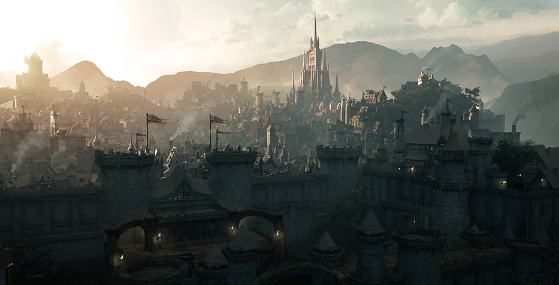

Guerra y Política
El Consejo de Stormwind Debate sobre la Embajada Forsaken
La propuesta de establecer una misión diplomática Forsaken en la ciudad ha provocado acalorados debates entre el liderazgo de la Alianza. El Alto Rey Anduin Wrynn apoya la iniciativa como un paso hacia la paz duradera.
Thunder Bluff Organiza Cumbre de Paz Histórica
Representantes de todas las órdenes druídicas se reunieron en Thunder Bluff para el primer Consejo Cenarion Unido, abordando preocupaciones ambientales tanto en Azeroth como en las Shadowlands.